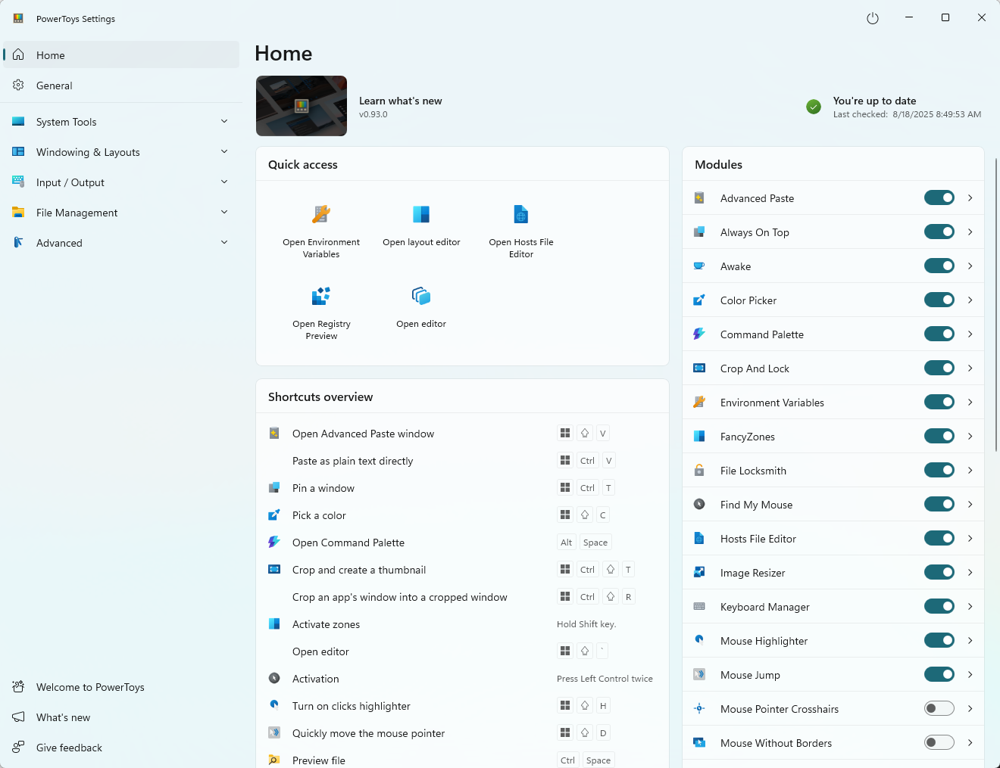
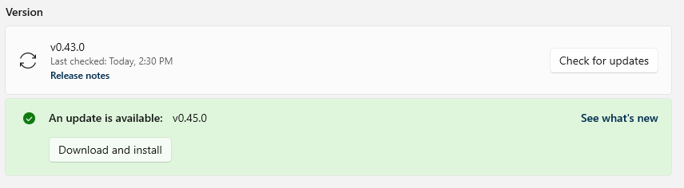

Install PowerToys on Windows
PowerToys is a set of utilities for customizing Windows that you can install using multiple methods. This article explains how to install PowerToys on Windows 11 and Windows 10 using an executable file, Microsoft Store, or package managers like WinGet, Chocolatey, and Scoop.
We recommend installing PowerToys via GitHub or Microsoft Store, but alternative install methods are also listed if you prefer using a package manager.
System requirements
The following are the minimum requirements to install and run PowerToys:
- Supported Operating Systems:
- Windows 11 (all versions)
- Windows 10 v2004 (19041) or newer
- System architecture
- x64 and Arm64 architectures are currently supported.
- The PowerToys installer will install the following runtimes:
- Microsoft Edge WebView2 Runtime bootstrapper (this will always install the latest version available)
To see if your machine meets these requirements, check your Windows version and build number by opening a Run dialog (Win+R), then type winver and select OK or Enter. Alternatively, enter the ver command in Windows Command Prompt or Windows Terminal. You may be able to update to the latest Windows version in Windows Update.
Tip
You can use AI assistance to create Windows Package Manager install commands for PowerToys with Copilot.
Install with Windows executable file from GitHub
To install PowerToys using a Windows executable file:
- Visit the Microsoft PowerToys GitHub releases page.
- Select the Assets drop-down menu to display the files for the release.
- Select the
PowerToysSetup-0.##.#-x64.exeorPowerToysSetup-0.##.#-arm64.exefile to download the PowerToys executable installer. - Once downloaded, open the executable file and follow the installation prompts.
Install with Microsoft Store
You can install PowerToys from the Microsoft Store's PowerToys page.
Install with Windows Package Manager
To install PowerToys using the Windows Package Manager, it's as simple as running the following command from the command line / PowerShell:
winget install --id Microsoft.PowerToys --source winget
PowerToys supports configuring through winget configure using Desired State Configuration.
Command-line installer arguments
The installer executable accepts the Microsoft Standard Installer command-line options.
Here are some common commands you may want to use:
| Command | Abbreviation | Function |
|---|---|---|
| /quiet | /q | Silent install |
| /silent | /s | Silent install |
| /passive | progress bar only install | |
| /layout | create a local image of the bootstrapper | |
| /log | /l | log to a specific file |
Ask Copilot for help with command-line arguments
You can get AI assistance from Copilot to generate a winget command with the arguments you need. You can customize the prompt to generate a string per your requirements.
The following text shows an example prompt for Copilot:
Generate a `winget` command to install Microsoft PowerToys with arguments to install silently and log the output to a file at the following path: C:\temp\install.log
Copilot is powered by AI, so surprises and mistakes are possible. For more information, see Copilot FAQs.
Extracting the MSI from the bundle
Make sure to have WiX Toolset v3 installed. The command doesn't work with WiX Toolset v4.
This PowerShell example assumes the default install location for WiX Toolset and that the PowerToys installer has been downloaded to the Windows desktop.
cd $Env:WIX\"bin"
# dark.exe -x OUTPUT_FOLDER INSTALLER_PATH
.\dark.exe -x ${Env:\USERPROFILE}"\Desktop\extractedPath" ${Env:\USERPROFILE}"\Desktop\PowerToysSetup-0.53.0-x64.exe"
Fixes for uninstalling 0.51 and earlier builds issues
If you have an issue with the MSI being inaccessible, you can download the installer that corresponds with the installed version via the PowerToys releases page and run the following command. You'll need to change EXECUTABLE_INSTALLER_NAME to the actual file name.
In PowerShell, run .\EXECUTABLE_INSTALLER_NAME.exe --extract_msi and this will extract the MSI to your desktop.
Clean-up scripts
If there are problems while uninstalling a version, there are cleanup scripts available:
- <github.com/microsoft/PowerToys/tree/main/tools/CleanUp_tool>
- <github.com/microsoft/PowerToys/tree/main/tools/CleanUp_tool_powershell_script>
Community-driven install tools
These community-driven alternative install methods aren't officially supported, and the PowerToys team doesn't update or manage these packages.
Install with Chocolatey
To install PowerToys using Chocolatey, run the following command from your command line / PowerShell:
choco install powertoys
To upgrade PowerToys, run:
choco upgrade powertoys
If you have issues when installing/upgrading, create an issue at the maintainers GitHub repository or follow the Chocolatey triage process.
Install with Scoop
To install PowerToys using Scoop, run the following command from the command line / PowerShell:
scoop bucket add extras
scoop install powertoys
To update PowerToys using Scoop, run the following command from the command line / PowerShell:
scoop update powertoys
If you have issues when installing/updating, file an issue in the Scoop repo on GitHub.
After installation
After successfully installing PowerToys, an overview window will display with introductory guidance for each of the available utilities.
If you view the Home view of the PowerToys settings, you can get quick access to some of the utilities, see an overview of the available shortcuts, and enable or disable individual utilities.

Updates
PowerToys uses an automatic update checker that checks for new versions when the app is running. If enabled, a toast notification will appear when an update is available. You can also check for updates manually from the PowerToys Settings.

Related content
Microsoft PowerToys: Utilities to customize Windows